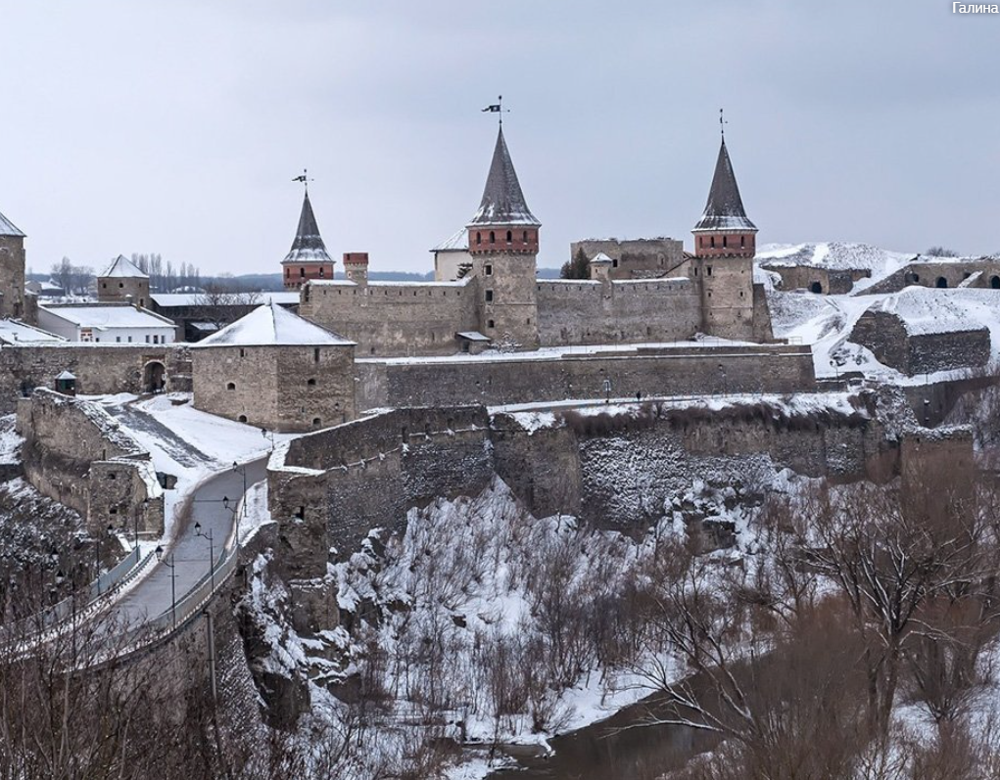
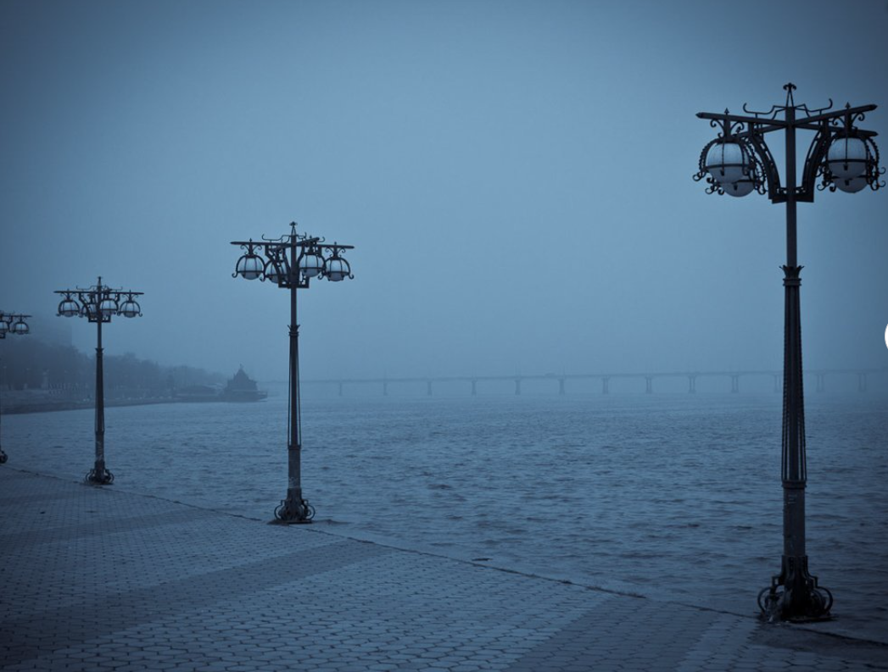

10 найромантичніших місць в Україні
Святкування Дня святого Валентина – чудовий привід відвідати зі своєю половинкою романтичні місця, як наче створені для закоханих. Для цього не обов’язково їхати в Париж, Венецію чи Прагу, адже в Україні також є затишні куточки, де повітря сповнене кохання, а любовні історії може розповісти все навкруги.
1. Острів закоханих у Тернополі
Відвідати Тернопіль варто заради подорожі на Острів закоханих, який видніється посеред водної гладі Тернопільського ставу. Це оповите романтикою місце з’явилось внаслідок доволі буденних подій – після відновлювальних робіт, які велись після закінчення Другої світової війни.
Дістатись мальовничого острова можна, як пішки мостом, так і на човні, щоб здійснити цікавий ритуал. Тисячі пар приїжджають сюди, щоб побачити своє майбутнє, яке, згідно легенди, відкривається після пильного спостереження за водою.
2. Італійський дворик у Львові
Це місце – наче справжня Верона посеред українського Львова. За легендою, прислухаючись до стін, можна почути тихий шепіт закоханих.
Саме з Італійським двориком пов’язана історія кохання, яке спалахнуло між польським королем Яном Собеським та Марією Казмірою. Приховуючи свої почуття, вони зустрічались під захистом древніх стін епохи Ренесансу.
3. Андріївський узвіз у Києві
В Києві чимало місць, де два закоханих серця можуть насолодитись справжньою романтикою. Прогулянка Андріївським спуском стане мандрівкою крізь віки, де кожен дворик та будинок оповиті давніми легендами.
Обов’язково варто відвідати Пейзажну алею – саме тут реальність поєднується із казковою, магічною атмосферою.
Відчути незвичайну і романтичну енергетику можна навіть у похмуру погоду, а доторкнувшись до 400-літньої липи, яка росте навпроти Історичного музею, зміцнити своє кохання та сімейні відносини. З оглядових майданчиків відкривається чудова панорама на кольорові та яскраві квартали Воздвиженки.
4. Міст закоханих у Запоріжжі
У Запорожжі майже всі романтичні місця пов’язані з водою, не став виключенням і Міст закоханих. Ажурний перехід через невелике озерце став справжньою меккою для закоханих, які приїжджають до Вознесенського парку, що зізнатись у своїх почуттях.
5. Старий замок у Кам’янець-Подільську
Кам’янець-Подільська фортеця – справжня візитна картка міста, яка до того ж є і одним із найромантичніших місць.
Тут повітря насичене легендами та переказами про минулі часи, а величні башти та укріплення вражають своєю могутністю. До фортеці веде Турецький міст, що є одним із найстаріших в Україні. Саме вздовж його перил закохані прикріплюють замки, як символ свого кохання.
6. Софіївський парк в Умані
Софіївка в Умані – вічний пам’ятник почуттям, який Станіслав Потоцький заклав для Софії, своєї дружини грецького походження. За переказами, жінка несамовито тужила за батьківщиною, саме тому граф вирішив подарувати коханій справжній оазис, Елладу у мініатюрі.
Статуї Аполлона, Венери, Орфея та багато інших скульптур по всьому парку відтворюють грецьку та римську міфологію, а фонтан «Змія» захоплює дух. Закохані зможуть не тільки помилуватись унікальним ландшафтом, але і відпочити в одному із тихих куточків Софіївки.
7. Замок Радомисль у Радомишлі
Цей історико-культурний комплекс на околиці міста Радомишль Житомирської області лише недавно святкував своє відродження. Замок розташований на «Шляху королів», який простягається за межі України аж до Іспанії. С
8. Колонада Воронцовського палацу в Одесі
Колонада Воронцовського палацу, або ротонда - затишне місце для закоханих, що заховане посеред міського шуму. Досі це місце в Одесі залишається овіяне романтикою. Прийти сюди удвох і, обійнявшись, дивитися на безкрайні простори моря, на гомінкий порт та блакитне небо та уявляти, як почувалися закохані із старої легенди виникнення цього місця – адже їм довелося розлучитися навіки.
9. Тунель кохання у Клевані
Неподалік невеличкого села Клевань, що на Рівненщині, знаходиться «Тунель кохання». Сюди щороку приїжджають тисячі закоханих, яким відкривається романтична арка, утворена дивним переплетінням гілок дерев і кущів навколо залізничної колії. В тунелі можна організувати оригінальну фотосесію разом зі своєю другою половинкою, або просто помилуватись мальовничою природою.
10. Набережна міста Дніпро
Найдовша в Європі (30 км) Дніпровська набережна – не просто візитна картка міста. Вона стала місцем зустрічі пар, які хочуть просто приємно провести час в компанії один одного, а також посидіти на славнозвісній «Лавці закоханих» під «Деревом щастя», зізнавшись у своїх почуттях. Увічнити взаємну любов можна, прикріпивши на одну із гілок замок.